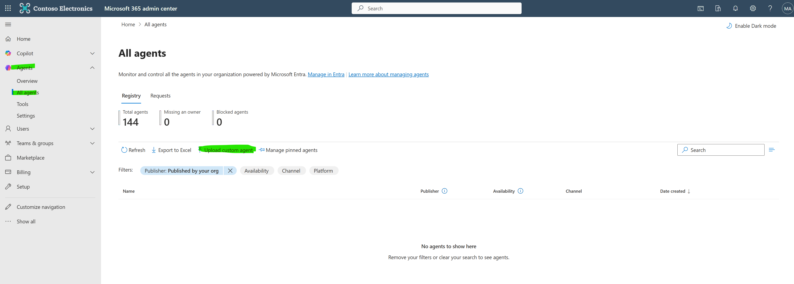
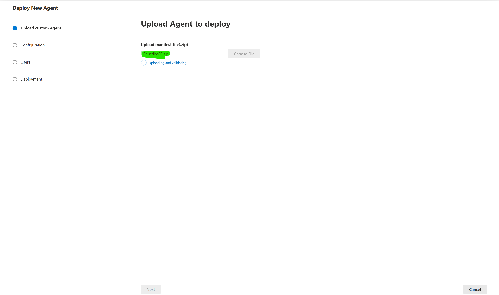
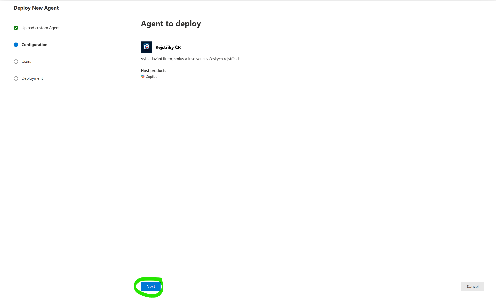
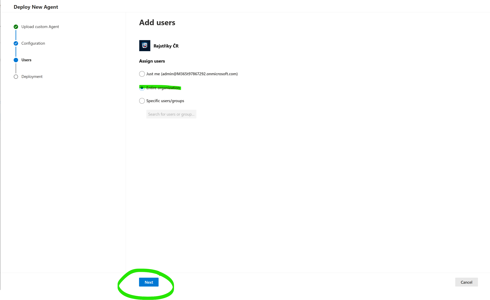
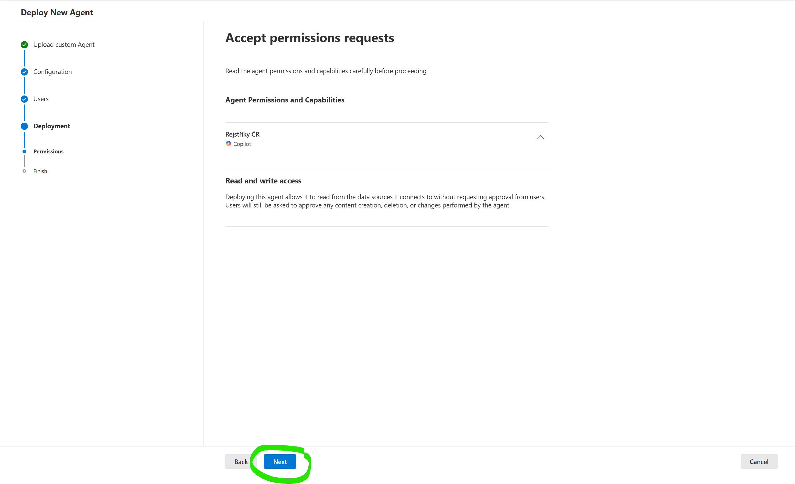
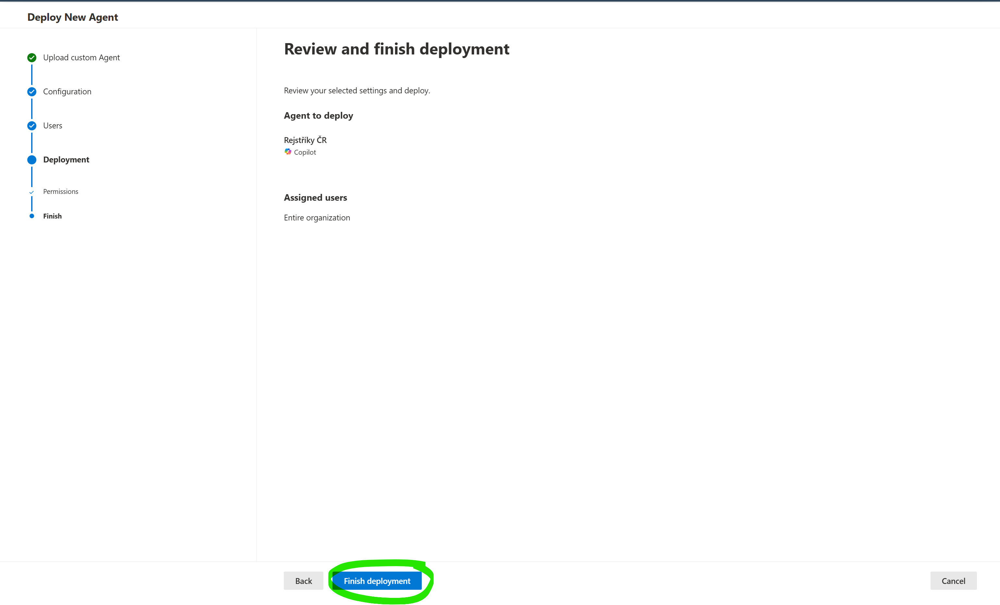
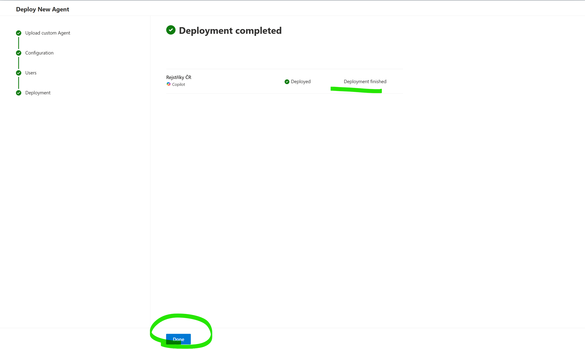

Než začnete
Pro nasazení agenta potřebujete:
- Roli Global Administrator, Teams Administrator nebo AI Administrator v Microsoft 365 tenantovi
- ZIP balíček agenta — stáhněte níže
Postup nasazení — krok za krokem
Přejděte na admin.microsoft.com → Agents → All agents → klikněte Upload custom agent.
Nebo přejděte přímo na Agents → All agents.

V dialogu nahrajte stažený soubor SUKLLeciva.zip.

Systém validuje balíček. Pokud je vše v pořádku, klikněte Next.

Vyberte, kdo bude mít k agentovi přístup:
- Entire organization — všichni uživatelé v tenantovi
- Specific users/groups — konkrétní uživatelé nebo skupiny

Zkontrolujte požadovaná oprávnění agenta a klikněte Next.
Agent nepotřebuje žádná zvláštní oprávnění. Komunikuje pouze s vlastním backend API na Azure — nepřistupuje k žádným interním firemním datům ani souborům.

Zkontrolujte souhrn a klikněte Finish deployment.

Agent je nasazen. Propagace do M365 Copilot může trvat několik minut až hodin.
Uživatelé najdou agenta v levém panelu M365 Copilot nebo ho mohou zavolat přes @SÚKL Léčiva v chatu. Zkuste zadat: „Najdi léky s paracetamolem".

Aktualizace agenta
Při budoucích aktualizacích (nové funkce, opravy, změna instrukcí):
- Stáhněte nový ZIP balíček
- V M365 Admin Center přejděte na Agents → All agents
- Najděte SÚKL Léčiva v seznamu
- Klikněte na aplikaci → Update → nahrajte nový ZIP
Poznámka: Aktualizace ZIP balíčku je potřeba pouze při změnách na straně agenta (instrukce, pluginy, ikony). Pokud se mění pouze backend server (nové datové zdroje, opravy chyb), žádná akce ze strany administrátora není nutná.
Odebrání agenta
Pokud potřebujete agenta odebrat:
- V M365 Admin Center přejděte na Agents → All agents
- Najděte SÚKL Léčiva
- Klikněte Remove
Řešení problémů
| Problém | Řešení |
|---|---|
| Validace ZIPu selhala | Zkontrolujte, že používáte správný soubor SUKLLeciva.zip. Nerozbalujte ani neupravujte obsah. |
| Uživatel nevidí agenta | Propagace může trvat až několik hodin. Ověřte, že uživatel byl přiřazen v kroku 4. |
| Agent neodpovídá | Backend server na Azure může být dočasně nedostupný. Zkuste to za chvíli znovu. Viz uživatelský návod pro další tipy. |
Důležité: Agent komunikuje s vlastním backend API běžícím jako Azure Container App, které se připojuje k SÚKL OpenData API a Azure AI Search. Žádná firemní data neopouštějí organizaci.